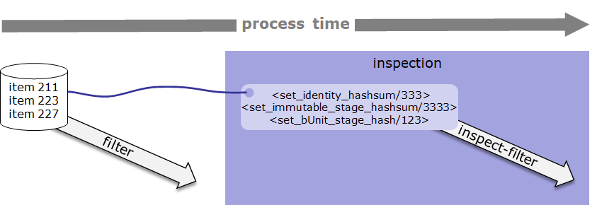
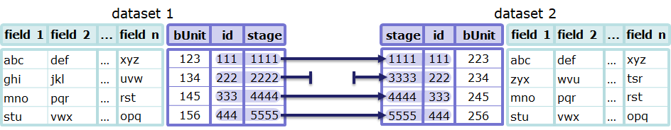
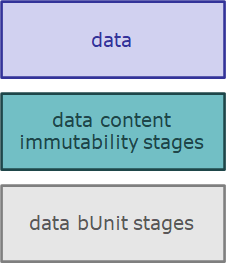
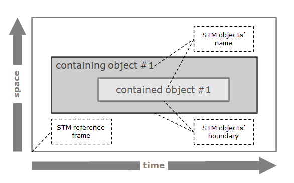
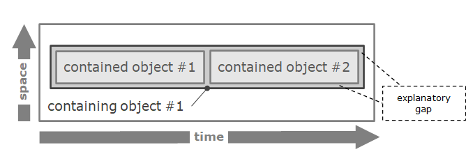
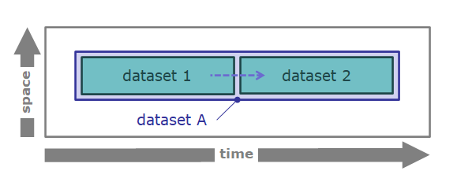

TtDT - Report - Appendix - Reference Iconography - Report - Life history
Identity tracking/tracing - general
Components
iconography object names | iconography objects | notes |
|---|
inspection | single object: | this rectangular shape with the “inspection” name surrounds processes that relate to data inspection see in-context example |
tracking/
mapping | single object: | The tracking/
mapping arrow represents the trace of data. Where there is , the arrow is “T-shaped” as shown in the in-context example |
In-context examples
diagrams | notes and examples |
inspection |  |
dataset tracking/
mapping |  |
Identity tracking/tracing - in life history space-time diagrams
Components
iconography object names | iconography objects | notes |
|---|
identity transformation types palette |  | This palette applies to space-time extensions represented in a life history space-time diagram. It can be used to track identities visually. |
trace link | | This icon used to trace identities in a life history space-time diagram. |
In-context examples
diagrams | notes and examples |
BORO Space Time Map | note: the iconography is based on the BORO Space Time Maps (bSTM) iconography, which provides a way to visualise four-dimensional objects. A typical space-time map: Example: Where space-time boundaries coincide (in the example below, the space-time extension of containing object #1 coincides with the space-time extension of contained objects #1 and #2), an explanatory gap between boundaries is used.  |
life-history space time diagram | A life history space-time diagram is typically a BORO Space Time Map enriched with tracking/tracing icons. In the example below: the trace link icon between the extensions of dataset 1 and dataset 2 indicates the predecessor and successor in the transformation space-time extensions for dataset 1, dataset 2 and dataset A are coloured according to the identity transformation types palette.
 |